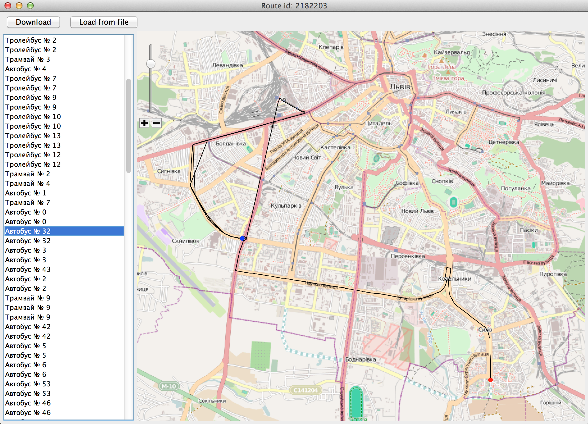
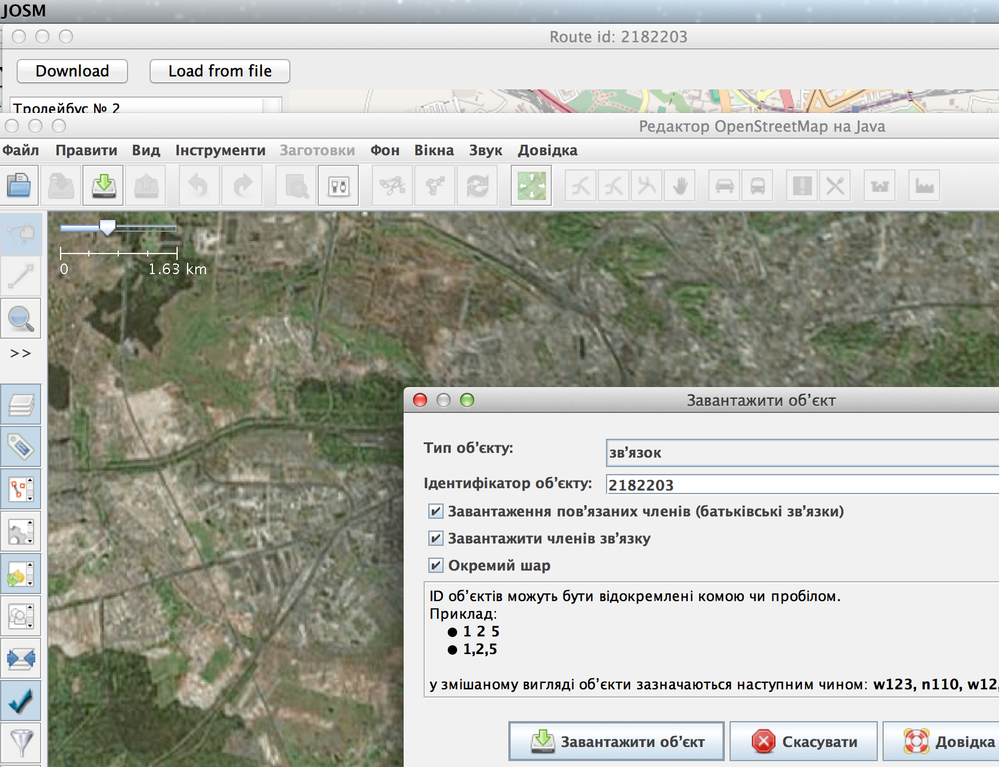
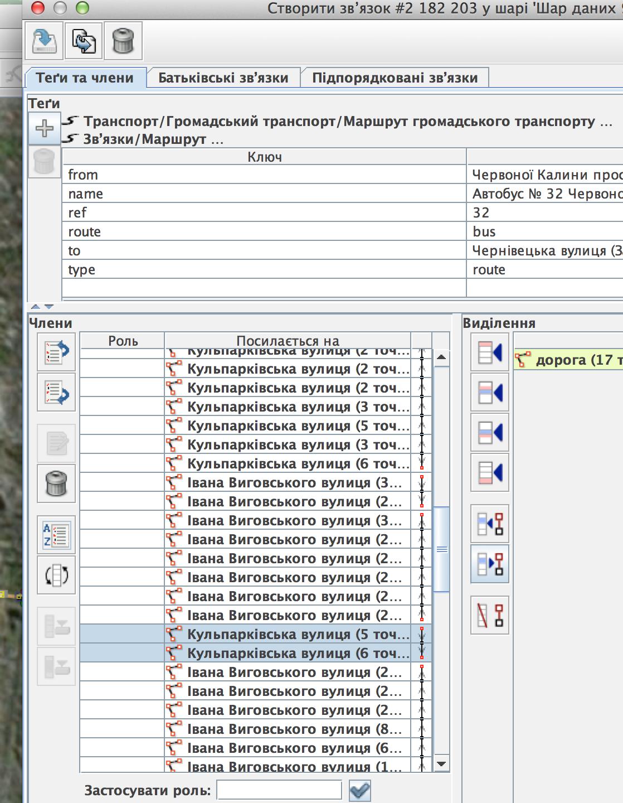
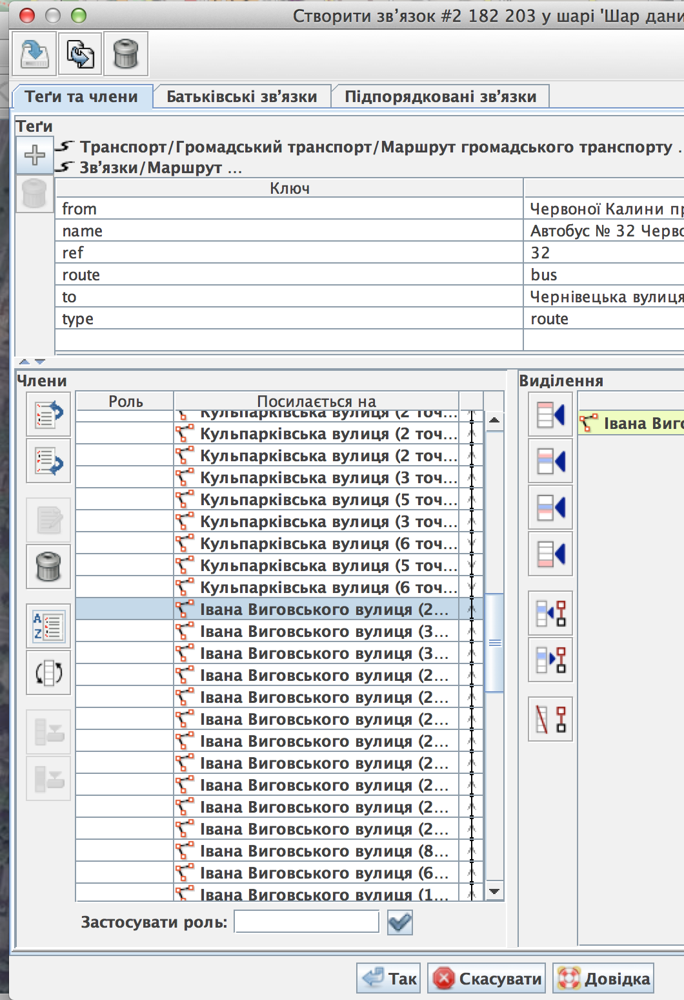
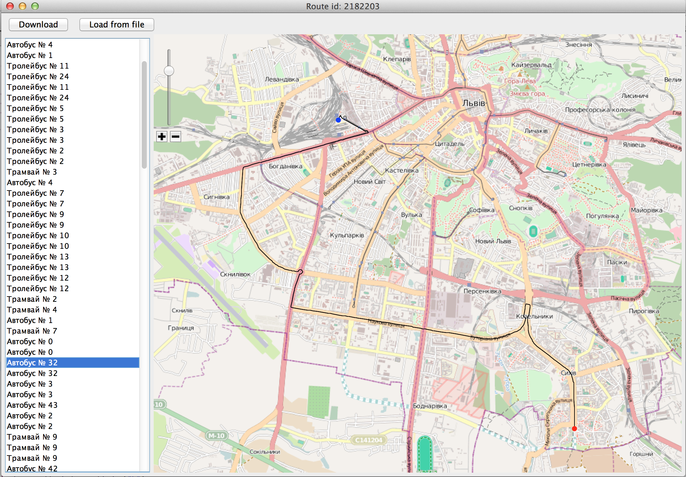

Помилки при редагуванні маршрутів
Порядок доріг для маршрутів
Помилку з порядком можна легко визначити глянувши програму для прегляду маршрутів. Наприклад маршрут №32 - червоним позначено початок маршруту, синів - кінець. Як бачимо кінець маршруту розташований не на своєму місці.

Завантажуємо звязок(relation) в Josm (id маршруту прописане в шапці форми)

Після завантаження глянемо на звязок і їх елементи. Можна одразу побачити що не усі вулиці звязані одне з одним (стовпчик справа від імен вулиць):

для того міняємо їх порядок так щоб утворилась суцільна лінія

відправляємо зміни на сервер і нажимаємо 'download' щоб оновити дані, і знову дивимось на маршрут. Ну от, тепер усе на своїх місцях.
